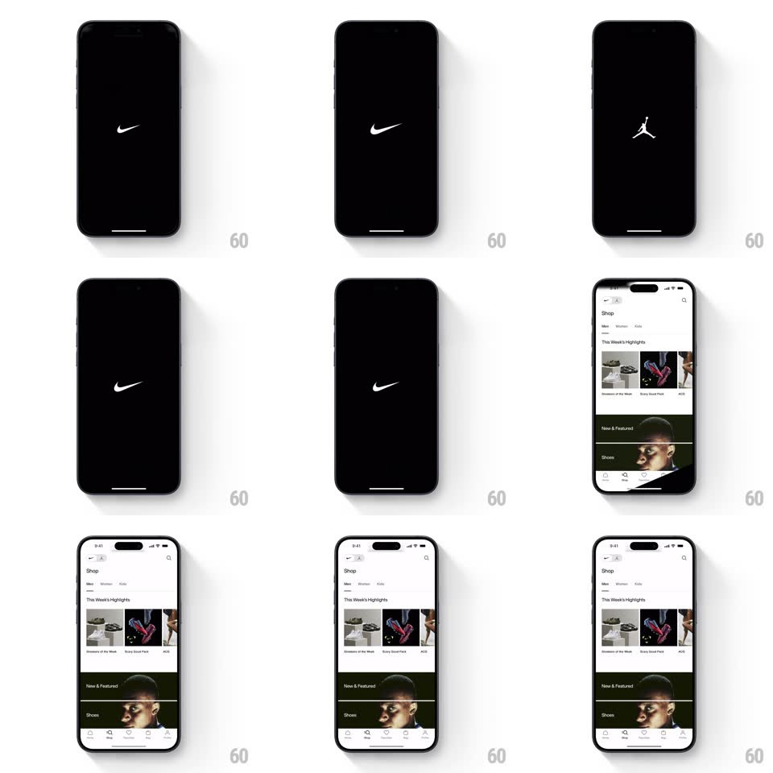

Media
Frame-by-frame

Rebuild this animation 1:1: Nike's splash - the swoosh and the Jordan jumpman mark alternate on black, then the swoosh scales up to fill the screen and wipes through to the home feed.

Rebuild this animation 1:1: Nike's splash - the swoosh and the Jordan jumpman mark alternate on black, then the swoosh scales up to fill the screen and wipes through to the home feed. ## Integration Integration: stack-agnostic spec - springs given as stiffness/damping, timed motions as duration + curve; map every value to your framework and animation library of choice. ## Scene A black splash screen with a small centered white logo (Nike swoosh or Jordan jumpman); the end state is the Nike home screen (Shop header, highlight cards, tab bar). ## Motion spec Pattern: alternating logo beats into a full-screen scale wipe, ~2.2s total. - Beats: the centered logo crossfades between the swoosh and the jumpman mark (each holds ~350ms, 200ms crossfade), roughly three alternations. - Scale wipe: the final swoosh scales from 1 to fill the screen (~12x, 450ms, ease-in) until its white covers the frame. - Reveal: mid-scale (once the logo covers ~60% of the frame) the home screen fades in beneath it (300ms), so the wipe resolves directly into the feed - no flash of solid white between. - The home content is fully static on arrival; the motion ends with the wipe. ## Calibration - Logo beats read as a rhythm, evenly timed. - The scale-up accelerates (ease-in), so the wipe feels like a punch through. ## Reduced motion Single logo fades straight to the home screen (300ms). ## Don't miss - Only the last appearance scales up - the earlier beats stay small and centered. - The home screen is already rendering under the wipe; it does not pop in after.